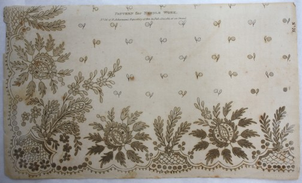
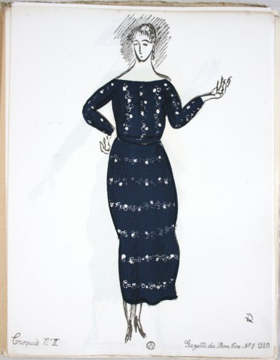
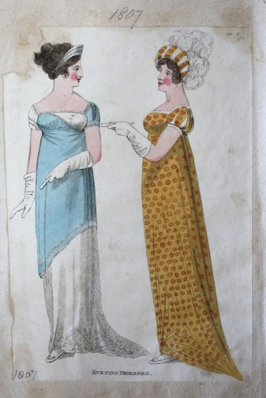
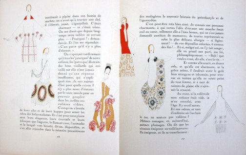

This is a blog that documents fashion – as image, as object, as text, as an experience,
and as an industry.
Written by Rebecca Arnold, Lecturer in History of Dress and Textiles, and current
postgraduate and research students of the history of dress at The Courtauld Institute of Art
in London, it provides a platform to show our current work, and our responses to dress-related
matters we see around us.
We aim to share our ideas, show you items from The Courtauld’s collections, and
generally discuss anything that we think is interesting and provocative about fashion now,
as well as in the past.
We will update regularly, with interviews, images and comments that analyse dress
history and encourage debate about what fashion is, was and will be.
Our research, our current ideas, and what we’re thinking about now.
To view ‘Work in Progress’ posts, click here.

We analyse fashion and dress in relation to works from The Courtauld
Collections. To view ‘From the Collections’ posts, click here.

We interview people from The Courtauld about what they are wearing,
and how they interpret ‘fashion’. To view ‘5 Minutes With…’ posts, click here.

We talk to people who have something interesting to say about fashion and
dress. To view interviews, click here.

We discuss themes relating to the contemporary fashion industry.
To view ‘Fashion Now’ posts, click here.
